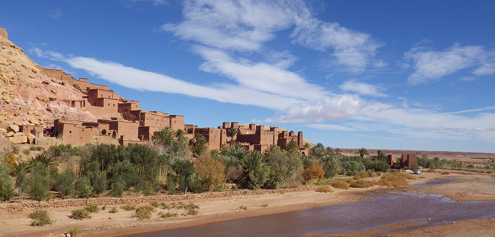
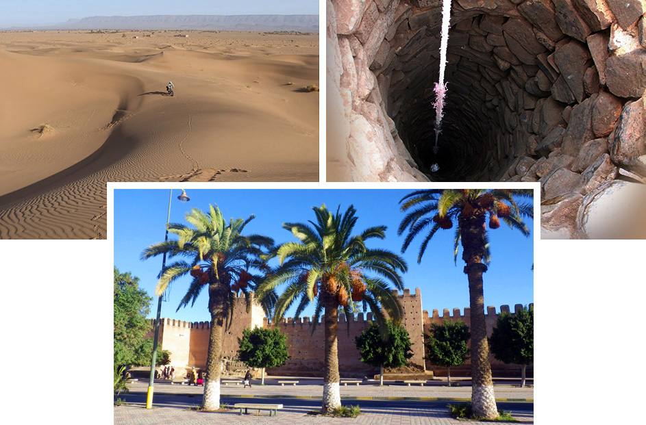
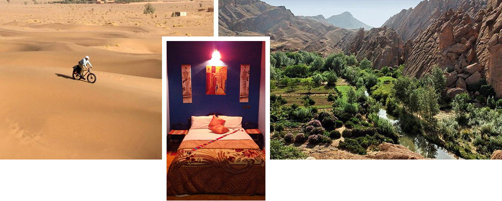
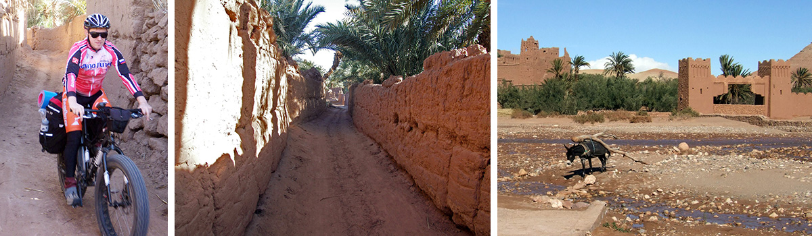
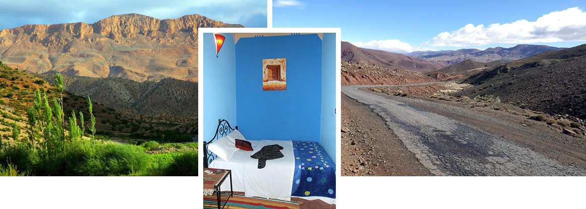
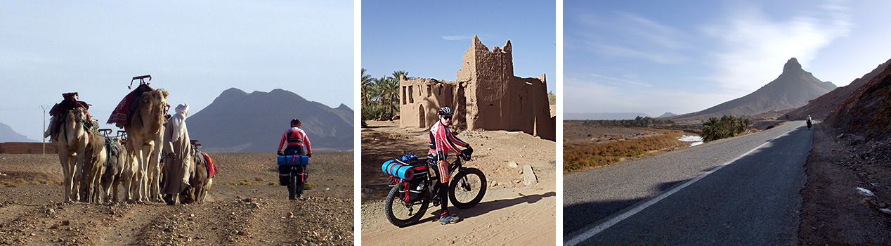

.jpg)
Вступительное слово И. Гуревича.
Друзья! Если Франция или Италия - гордость мира западного, лидеры западного изящества, стиля, образа жизни, то в мире востока такой страной-гордостью является Марокко. Марокко — одна из самых загадочных и красивых стран, где сказки тысячи и одной ночи кажутся явью. Марокко не просто обладает восточным колоритом, но и удивительной природой. Горы высокого Атласа делят ее на три части: прибрежную, горную и пустынную, где властвует Сахара. В Марокко можно увидеть настоящие пустынные дюны (барханы), древние Касбы (крепости) , горные ущелья, сложенные из горных пород разного цвета. И, пожалуй, главное, что потрясает наших современников, - это возможность окунуться в атмосферу востока. А она удивительна! Наш маршрут проходит, на мой взгляд, в одном из самых интересных районов Марокко. Аккурат на границе гор и пустыни. Здесь намного больше патриархальности, чем в столице этой страны. Здесь можно найти кафе, настоящее, местное, где люди едят, не используя приборов. Они берут еду кусочками хлеба. А если дают приборы, то они... сделаны вручную местными мастерами. Конечно, беспощадная индустриализация добирается и сюда, и уже можно увидеть вилку с заводским заокеанским клеймом... Увы. Удивительны города востока. Они, как восточные женщины, которые носят хиджаб, а под - ним изысканные одеяния и украшения. Их красоту увидит не каждый, а лишь тот, кому дозволено этот хиджаб снять. Так и в городах. Вы можете идти по старинной улице, которая больше напоминает грязный гаражный проезд на окраине наших городов. Но вы заходите в приземистую дверь, и перед вами роскошь востока. Ковры, фонтаны, нередко птицы в клетках... Марокко открывает перед человеком удивительный мир востока, который обязательно надо увидеть. Без визита в эту страну невозможно сказать, что вы видели этот мир, эту планету. На нашу удачу, из всех великих стран востока Марокко является самой безопасной. Здесь бывают миллионы туристов со всего мира!
Обратим внимание, что наш маршрут идет по самым разным дорогам и даже «дорогам». Асфальтовых дорог на маршруте минимум. Ведь, чтобы увидеть самое интересное в Марокко, надо забраться далеко от цивилизации! Мы будем много ездить по пустынным дорогам, грунтовкам. Это будет безумно интересно, но требует определенного навыка. Просто не будет. Хотя машина сопровождения и гиды всегда будут вам в помощь!
Марокко - очень большая страна. Африканский размер! И мы спланировали маршрут, в котором мы будем ездить на велосипедах по самым красивым на наш взгляд и разнообразным с точки зрения природы местам. А между ними проезжать на автобусе сопровождения, который будет брать на борт всю нашу группу (7 человек) и гидов. Так мы увидим максимум интересного! Поехали!
Удачного вам похода. Для иллюстраций использованы фотографии И. Гуревича и Д. Кимбера 2015 года.
В этот день мы прилетаем в аэропорт Касабланки, садимся на машину и уезжаем в небольшой отель, который расположен на западных склонах Атласских гор. Западные склоны - влажные. На них выпадают осадки, приносимые с Атлантического океана. Тут все зеленое! Текут обратно в океан реки с гор. Круговорот воды наблюдаем как в учебнике географии. Как в учебнике и виды: глиняные дома, люди, использующие ослов в качестве тягловой силы. Но! Нас ждеьт комфортный и уютный отель в Мавританском стиле. Кстати, знаете откуда название этого стиля пошло? Верно, из этих мест. Вечером мы посетим ресторан, где отведаем местных блюд.
Мы стартуем из отеля и едем по живописному ущелью в горы. Это очень интересно. Вверх мы едем медленно, и можем любоваться окрестными пейзажами. Тут и кишлаки, и сады, и горы удивительно красного оттенка. Мы поднимаемся все выше и выше. Наградой нам будет ланч с видом на высокие горы, и после ланча - спуск обратно в отель! В этот день мы познакомимся с жизнью людей, я бы сказал, счастливых Марокканцев, у которых есть ВОДА!
Утром мы забросимся на перевал Тичка, с которого поедем вниз по старой дороге, на которой почти нет автомашин. Удивительно, как поменялась природа! Только что мы были в лесах, на перевале если нам повезет, видели даже немного снега на склонах окрестных гор. И вот мы уже в пустыне. Граница пустыни и леса тут очень резкая. Влага задерживается горами высокого Атласа, и восточным склонам ничего не достается. С другой стороны, тут очень красиво - видно на десятки километров. Горы сложены из разноцветных материалов. Финишируем мы в уникальном местечке Аит бен Хадоу. Это глинобитный город, с улицами, башнями. Здесь можно посмотреть, как люди жили несколько сотен лет назад. Ночуем в городе Варзазате.
Сегодня у нас по плану езда по настоящему оазису в Пустыне. Как ни мало выпадает осадков на восточных склонах Атласа, но их набирается на небольшую речку, которая течет в направлении Сахары. Вдоль нее растут пальмы, живут люди. Действует экономика на ослиной тяге. Люди в массе своей еще не забыли, что такое национальные одежды. Антураж удивительный. Все как в средние века: колодцы, ослы везущие какие-то грузы в арбах... Единственное, что на арбах уже часто не деревянные колеса, а обычные, с камерами и покрышками. Все-таки не средние века. Хотя..
Мы обещали вам пустыню? Сегодня мы доедем (как и вчера вдоль оазиса) до первой дюны. Все имеет свое начало, даже пустыня. Так вот, песчаная часть Сахары начинается да, с первой дюны. Она - удивительна. Чем? Она стоит на каменистой местности. Впереди горы. Никакого песка вообще нет. Откуда он? В горах есть узкий проход, оттуда временами дует сильный ветер, который несет песок из центральной части Сахары. Ветер выносит песок через ущелье, скорость ветра тут падает, и песок выпадает на землю. Потихоньку его сметает в довольно большую дюну, которая одиноко стоит посреди каменной пустыни.
Интересно у нас получается в походе: два дня высокого Атласа, два дня оазиса в пустыне, а теперь два дня знаменитых ущелий. Сегодня перед нами ущелье Дадес. по сложившейся традиции, мы едем по нему вверх, а затем скатываемся вниз. Вверх едем с чувством, толком, расстановкой. Останавливаясь где красиво. Впрочем, все-таки не везде. Каждый метр этого ущелья красив. Сначала вроде ничего так: дорога идет вдоль речки. Потом подходят горы. Они все ближе и ближе, и вот, наша дорога зажата в пятиметровом каньоне между горами и рекой. Справа и слева от нас на сотни метров вверх идут скалы. Очень красиво.

Сегодня нас ждет еще одно ущелье. Мы вновь едем вверх по асфальтовой дорожке, вновь вдоль речки. Удивительное дело - это все находится на планете Земля. Никогда бы не подумал. Такие здесь нереальные краски. Вечером вновь мы в Варзазате.
Это последний день нашего катания. Мы вновь поднимаемся на машине на перевал, достаем велосипеды, и скатываемся в Марракеш по красивой боковой дорожке. Какой склон? Верно: западный. А раз западный - высотная поясность в своем великолепии. На перевале может быть снежок на соседних склонах, далее луговая зона, затем начинаются леса. Невероятная красота... Горы те же, но тут - вода! Вечером перед нами раскрывает врата Марракеш - город от которого пошло название страны - Марокко. Великий город востока.


Утром мы еще пройдемся по Марракешу, затем на машине переедем в Касабланку. Если погода позволит, то перед тем, как сесть на самолет, мы искупаемся в море. Купаться тут (на мой взгляд) можно даже зимой. Но что точно можно делать круглый год, так это осматривать достопримечательности Касабланки, особенно ее знаменитую мечеть, построенную на берегу моря. Вечерний рейс унесет вас обратно на Родину. Надеюсь, унесет вас с любовью к Марокко в сердце.


NB. Данное описание - это план путешествия. Организаторы сохраняют за собой право на его изменение в зависимости от конкретной ситуации.
{/block}